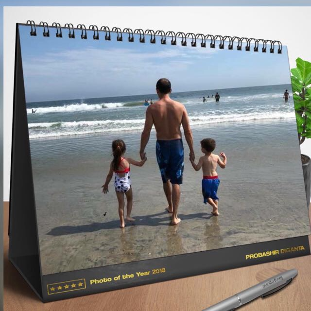

I currently work at VSoft Corp as a Solutions Engineer and LATAM Sales. I am married
with 2 Children. My daughter Rebecca is 6 years old and my son Nicholas is 4 years old. They keep mamy and daddy
busy all day and night. My wife, Karem, also works. She is a Business Analyst Manager at eTrade. She
is great at what she does.
I am originally from Venezuela and moved to the USA in May 21, 2000. Atlanta has been my home for the last 13
years. Prior to Atlanta, I lived in Houston, Texas. My parents and my brother continue to live in
Houston. My wife parents live in Tenerife, Spain. They also migrated from Venezuela and they've been in Tenerife
for the last 5 years or so.